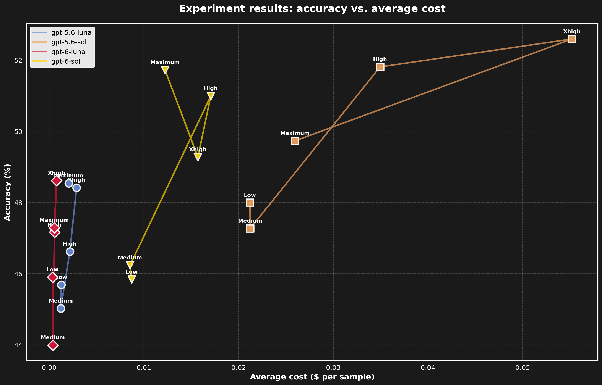
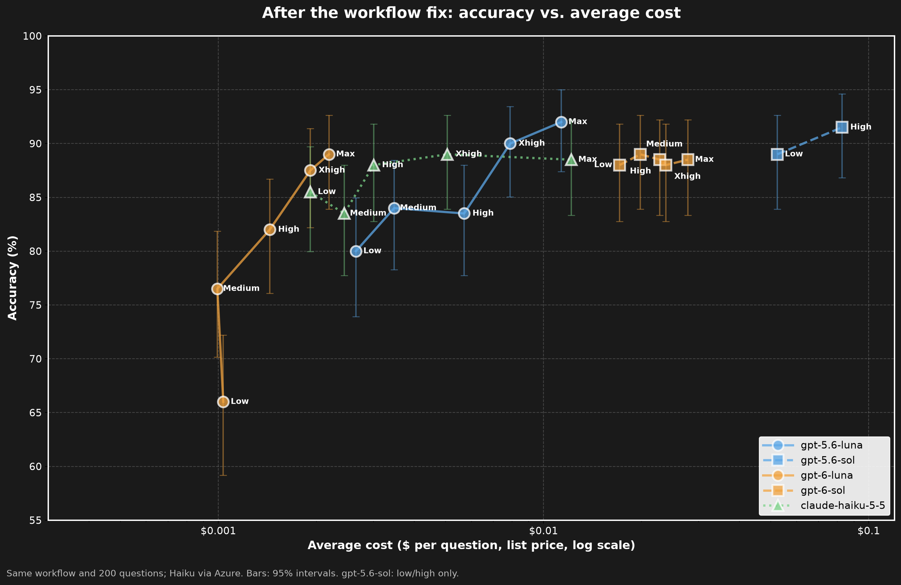

Task
AI automates existing work, or augments the human.
The TWO methodology
AI changes tasks. Workflows need owners.
TWO is a way to redesign work around AI at three levels. Start with one real workflow.
The validation tax
The people who have to trust the result still verify it. We call that gap the validation tax: the model is fast, but the review moves onto whoever stands behind the output.
Most pilots make one task faster and leave the handoffs, the review and the decisions around it unchanged. So the checking becomes the bottleneck.
T-W-O
These are levels of design, not separate boxes. Copilots can support a workflow, and agents can do individual tasks.
AI automates existing work, or augments the human.
A verified output: numbers recomputed, sources named, errors fixed.
What does a good result look like, and who checks it?
Agents coordinate the steps. Humans review at defined gates.
A repeatable process with gates that someone else can run.
At each handoff, what output arrives, what evidence makes it acceptable, and what happens if the check fails?
Owners and shared standards. Incentives make it durable.
Standards and skills that a team adopts, with the gates owned.
For each place AI acts, who is accountable?
OrganizationOwnership, shared standards, incentives. This is what makes the workflow last.
WorkflowSteps, handoffs and review gates. Agents coordinate; humans review at the gates.
An example from our own work
We asked an AI-built benchmark which model our team should standardize on for spreadsheet analysis.

Our own workflow mistakes were counted against the models.

Files mattered; the control barely moved. Averages over 17 model configurations. “Before” is the original answers to the same questions, re-graded with the same grader. This is one benchmark, and 200 of its 757 tasks: an illustration, not proof.
Next steps
The narrative entry point to work, judgment, and ownership in the GenAI era.
Read The Owner and its previewPapers and talks on tasks, workflows, governance, and organizational structure.
Explore the researchA paid working session for teams to map work and practice workflow redesign.
Explore team bootcamps